Недавние исследования захоронений, проведенные доктором Филипом Вальтером из Центра исследований и реставрации французских музеев, показали, что в Древнем Египте нанотехнологии применяли для окрашивания волос в черный цвет. Группа исследователей не только изучила образцы волос из древнеегипетских погребений, но также в серии экспериментов воспроизвела древнюю технологию окрашивания (рисунок 1). До этого считалось, что египтяне использовали преимущественно натуральные растительные красители — хну и басму. Однако оказалось, что в черный цвет волосы красили пастой из извести Ca(ОН)2, оксида свинца PbO и небольшого количества воды. В процессе окрашивания получались наночастицы галенита (сульфида свинца).
Естественный черный цвет волос обеспечивает пигмент меланин, который в виде включений распределен в кератине волоса. Древнеегипетским парикмахерам удавалось добиться, чтобы красящая паста реагировала с серой, входящей в состав кератина, и образовывались частицы галенита размером до пяти нанометров. Они-то и обеспечивали равномерное и устойчивое окрашивание. При этом процесс затрагивал только волосы, а в кожу головы соединения свинца не проникали.
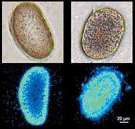
Рисунок 1 - Поперечный срез волос, полученный оптическим (вверху) и флуоресцентным (внизу) методами. Видно, что при длительном воздействии древней краски наноразмерные кристаллы глубже проникали в структуру волоса (справа), чем при кратковременном (слева).
Чаша Ликурга (IV век до н.э.) — одно из выдающихся произведений древнеримских стеклодувов, хранящихся в Британском музее. Этот кубок необычен не только своими оптическими свойствами, но и уникальной для тех времен методикой изготовления. Матовая зеленая чаша становится красной, если ее осветить изнутри (рисунок 2). Впервые анализ фрагмента чаши Ликурга провели в лабораториях «Дженерал электрик» в 1959 году — ученые пытались выяснить, что это за уникальное красящее вещество. Химический анализ показал, что хотя чаша состоит из обычного натриево-известково-кварцевого стекла, в нем есть около 1% золота и серебра, а также 0,5% марганца. Тогда же исследователи предположили, что необычный цвет и рассеивающий эффект стекла обеспечивает коллоидное золото (рисунок 2). Очевидно, что технология получения подобного материала была очень сложной.
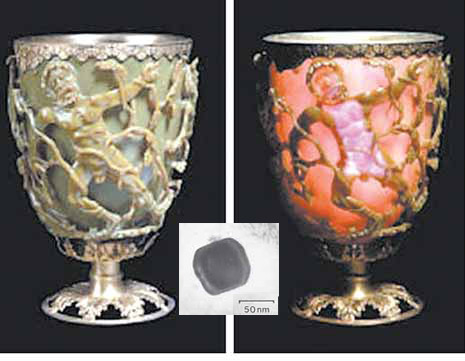
Рисунок 2 - Чаша, на которой изображен царь эдонов Ликург, которого Дионис поразил безумием, меняет свой цвет в зависимости от того, где находится источник света: снаружи (слева) или внутри (справа). Посередине рисунка — наночастица золота из образца стекла чаши Ликурга, увиденная с помощью электронного микроскопа.
Позже, когда методики исследования стали совершеннее, ученые обнаружили с помощью электронного микроскопа и рентгенограмм частицы золота и серебра размером от 50 до 100 нм. Именно они отвечали за необычную окраску кубка. Профессор Гарри Этуотер в своей обзорной статье по плазмонам, опубликованной в апрельском номере «Scientific American» 2007 года, объяснил это явление так: «Благодаря плазмонному возбуждению электронов металлических частиц, распределенных в стекле, чаша поглощает и рассеивает синее и зеленое излучение видимого спектра (это сравнительно короткие волны). Когда источник света снаружи и мы видим отраженный свет, то плазмонное рассеивание придает чаше зеленоватый цвет, а когда источник света оказывается внутри чаши, то она кажется красной, поскольку стекло поглощает синюю и зеленую составляющие спектра, а более длинная красная — проходит».
Яркие цвета витражей, украшающих храмы средневековой Европы, впечатляют нас до сих пор. Исследования показали, что стекло делали цветным добавки наночастиц золота и других металлов. Чжу Хуай Юн из Технологического университета Квинсленда (Австралия) высказал предположение, что витражи были не только произведениями искусства, но и, выражаясь современным научным языком, фотокаталитическими очистителями воздуха, удаляющими органические загрязнения. Катализаторами служили те же самые наночастицы золота. Ученый доказал, что крошечные частицы золота на поверхности стекла под воздействием солнечного света переходили в возбужденное состояние и могли разрушать органические загрязнения (те, которые до них долетали). Более того, они и сегодня сохраняют свою каталитическую активность.
«Когда золото измельчено до размеров наночастиц, оно становится очень активным под действием солнечного света. Электромагнитные колебания солнечного излучения резонируют с колебаниями электронов золотых наночастиц. В результате общее магнитное поле на поверхности наночастиц золота увеличивается в сотни раз и разрушает межмолекулярные связи загрязняющих агентов, содержащихся в воздухе». Профессор Чжу предполагает, что побочным продуктом этих реакций был углекислый газ, который в небольших количествах сравнительно безопасен.
В настоящее время аналогичная технология лежит в основе создания эффективных очистителей воздуха. Для их работы достаточно солнечного света, нагревающего наночастицы золота, тогда как обычные очистители (в них обычно используют оксид титана, серебро) требуют гораздо больше энергии для нагрева всего катализатора.
Во время крестовых походов европейцы столкнулись с лезвиями из дамасской стали, обладающими уникальными свойствами. Европейские оружейники не умели делать такие клинки. У них был характерный волнистый узор на поверхности — его по названию плетения ткани называли дамаск, — необычные механические свойства (гибкость и твердость) и исключительно острое лезвие.
Считается, что дамасские лезвия выковывали из небольших «пирогов» стали (его называли вуц), произведенных в Древней Индии. Сложная термомеханическая обработка, ковка и отжиг, применяемые при получении вуца, придавали стали необычные свойства и обеспечивали ее исключительное качество. Чаще всего в литературе можно встретить «рецепт» производства вуца, который был в ходу в Салеме и некоторых частях Майсора (Южная Индия).
Кусок плавкого железа, полученный из магнитной руды, весом около фунта мелко дробится, увлажняется и помещается в горн из огнеупорной глины вперемешку с мелко нарубленными кусками древесины ранавара (Cassia auriculata, дерево семейства бобовых). После плавки в горне открытые горшки покрывают зелеными листьями калотрописа (Calotropis gigantea), поверх которых накладывают лепешки из глины, высушенной на солнце до твердого состояния. Древесным углем заменить зеленые листья нельзя, получится не то. Дюжины две таких горшков (тиглей) помещают на пол печи, жар в которой поддерживают с помощью мехов из бычьих пузырей. Топливом служил в основном древесный уголь и высушенные на солнце коровьи лепешки. Через два-три часа плавки тигли остужают, раскалывают и оттуда извлекают заготовку, формой и размером напоминающую половину яйца. Согласно записям известного путешественника и купца Жана-Батиста Тавернье, самые лучшие заготовки для стали делали под Голкондой (Центральная Индия). Они были размером с небольшой пирог, и их хватало, чтобы сделать два меча.
Образец стали, взятый от подлинной дамасской сабли работы известного оружейника семнадцатого века Ассэда Уллаха, ученые Дрезденского университета (Германия) четыре года назад исследовали с помощью электронного микроскопа высокого разрешения. В структуре материала они обнаружили углеродные нанотрубки. Ученые и до этого не раз пытались определить микроструктуру дамасской стали, но на этот раз они сначала протравили образцы соляной кислотой, и именно это дало неожиданные результаты. После обработки обнаружились неразрушенные структуры цементита (карбида железа, который упрочняет сталь). Это позволило физикам предположить, что волокна цементита заключены в углеродные нанотрубки (рисунок 3), которые и защищают его от растворения в соляной кислоте.
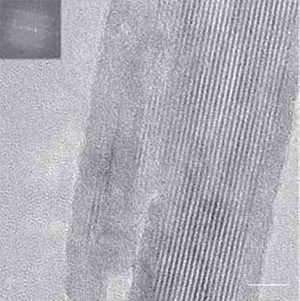
Рисунок 3 - Нановолокна цементита, заключенные в углеродные нанотрубки, в образце дамасской стали после травления соляной кислотой (получено методом электронной микроскопии).
Сформировались из углеводородов внутри микропор, причем катализатором могли служить ванадий, хром, марганец, кобальт, никель и некоторые редкоземельные металлы, содержащиеся в руде. При производстве дамасской стали температура обработки была ниже стандартной — 800°C. Во время циклической тепловой обработки получались углеродные нанотрубки, которые потом превращались в нановолокна и крупные частицы цементита (Fe3C). Циклическая механическая обработка (ковка) и соответствующий температурный режим постепенно распределяли углеродные нанотрубки в плоскостях, параллельных плоскости ковки, делая микроструктуру стали мелкозернистой и пластинчатой. И действительно, как показали последние исследования ученых из Дрезденского технического университета, микроструктура цементита представлена нановолокнами.
Авторы исследования считают, что особенная слоистая структура дамасских лезвий связана также с примесями, содержавшимися в руде из редких индийских месторождений. Уменьшающиеся запасы этой руды привели к тому, что многие оружейники, не знавшие тогда о легирующих элементах, не смогли получить дамасскую сталь, и после истощения рудников в конце XVIII века никому так и не удалось полностью воссоздать ее. Даже зная древний рецепт, европейские оружейники не смогли сделать настоящую дамасскую сталь, которая имела уникальные свойства благодаря наноструктурам.
В 1857 М.Фарадей приготовил коллоидный раствор золя золота (система, в которой дискретные частицы, капли или пузырьки дисперсной фазы, имеющие размер хотя бы в одном из измерений от 1 до 100 нм, распределены в другой фазе, обычно непрерывной, отличающейся от первой по составу или агрегатному состоянию и именуемой дисперсионной средой.)и показал, что сильный пучок (луч) света значительно рассеивается, проходя через эту дисперсию, таким образом, что его путь становится видимым - так же, как это происходит с лучом света в пыльной комнате или лучом от автомобильных фар туманным вечером. Это явление называется эффектом Тиндаля (в честь Дж.Тиндаля, который изучал его в 1869).
1905 Швейцарский физик Альберт Эйнштейн опубликовал работу, в которой доказал, что размер молекулы сахара составляет примерно 1 нанометр.
1931 Немецкие физики Макс Кнолл и Эрнст Руска создали электронный микроскоп, который впервые позволил исследовать нанообъекты.
1959 Американский физик Ричард Фейнман впервые опубликовал работу, где оценивались перспективы миниатюризации. Основные положения нанотехнологий были намечены в его легендарной лекции “Там внизу – много места” (“There’s Plenty ofRoom at the Bottom”), произнесенной им в КалифорнийскомТехнологическом Институте. Фейнман научно доказал, что сточки зрения фундаментальных законов физики нет никаких препятствий к тому, чтобы создавать вещи прямо из атомов. Тогда его слова казались фантастикой только лишь по одной причине: еще не существовало технологии, позволяющей оперировать отдельными атомами (то есть опознать атом, взять его и поставить на другое место).Чтобы стимулировать интерес к этой области, Фейнман назначил приз в $1000, тому, кто впервые запишет страницу из книги на булавочной головке, что, кстати, осуществилось уже в 1964 году.
1968 Альфред Чо и Джон Артур, сотрудники научного подразделения американской компании Bell, разработали теоретические основы нанообработки поверхностей.
1974 Японский физик Норио Танигучи ввел в научный оборот слово “нанотехника”, предложив называть так механизмы размером менее 1 микрона.
1981 Германские физики Герд Бинниг и Генрих Рорер создали сканирующий туннельный микроскоп прибор, позволяющий осуществлять воздействие на вещество на атомарном уровне. Через четыре года они получили Нобелевскую премию.
1985 Американский физики Роберт Керл, Хэрольд Крото и Ричард Смолли создали технологию, позволяющую точно измерять предметы диаметром в один нанометр.
1986 Создан атомносиловой микроскоп, позволяющий, в отличие от туннельного микроскопа, осуществлять взаимодействие с любыми материалами, а не только с проводящими.
1986 Нанотехнология стала известна широкой публике. Американский футуролог Эрик Дрекслер опубликовал книгу, в которой предсказал, что нанотехнология в скором времени начнет активно развиваться.
1989 Дональд Эйглер, сотрудник компании IBM, выложил название своей фирмы атомами ксенона.
1998 Голландский физик Сеез Деккер создал нанотранзистор.
2000 Администрация США объявила “Национальную нанотехнологическую инициативу” (National Nanotechnology Initiative). Тогда из федерального бюджета США было выделено
$500 млн. В 2002 сумма ассигнований была увеличена до $604 млн. На 2003 год “Инициатива” запросила $710 млн., а в 2004 году правительство США приняло решение увеличить финансирование научных исследований в этой области до $3,7 млрд. в течение четырех лет. В целом, мировые инвестиции в нано в 2004 году составили около $12 млрд.
2004 Администрация США поддержала “Национальную наномедицинскую инициативу” как часть National Nanotechnology Initiative.
2010 Константин Новоселов и Андрей Гейм (университет Манчестера, UK) за свои работы по созданию графена удостоились нобелевской премии.
Наноразмерные структуры – структуры, линейный размер которых хотя бы в одном направлении соответствует нанометровому диапазону.
Низкоразмерными структурами называют структуры, у которых, по крайней мере, один размер равен нулю. Такое определение носит условный характер, поскольку окружающий нас мир состоит из трехмерных объектов. Например толщина плоскости, сконструированной из атомов, равна не нулю, а диаметру одного атома, что составляет 10-10 метров. Нужно понимать, что двумерные, одномерные, нульмерные структуры не являются таковыми в строгом геометрическом смысле, а называются так лишь потому, что их размер в одном, двух или трех направлениях меньше определенного «критического» значения, ниже которого физические свойства структуры в этом направлении (направлениях) становятся отличными от свойств объемного (трехмерного) материала, из которого данная структура изготовлена. В твердотельных структурах так происходит, когда один из линейных размеров уменьшается до величины порядка наноразмеров.
В научной и технической литературе наноразмерные структуры часто называются наноструктурами. Квантово-механические явления в них являются доминирующими, что определяет их специфические электронные, оптические, магнитные и другие свойства.
Поведение подвижных носителей заряда (электронов и дырок) в наноструктурах определяют три группы фундаментальных явлений: квантовое ограничение, баллистический транспорт и квантовая интерференция, а также туннелирование. Все эти эффекты по своему происхождению представляют собой типичные квантово-механические явления.
Квантовое ограничение возникает, когда свободное движение электронов в одном из направлений оказывается ограниченным потенциальными барьерами, образующими наноструктуру, в которой эти электроны находятся. Оно изменяет спектр разрешенных энергетических состояний и влияет на перенос носителей заряда через наноструктуры.
Свободный электрон, движущийся в трехмерной системе (3D) имеет кинетическую энергию, величина которой, в соответствии с пространственными компонентами его импульсами px,py, pz, состовляет:
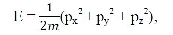
или, в волновом представлении,
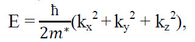
где m* - эффективная масса электрона (в твердых телах она обычно меньше, чем масса покоя электрона m0); ħ — приведенная постоянная Планка (ħ= h/2𝝅);kx,ky, kz – пространственные компоненты волнового вектора. Плотность электронных состояний при этом является непрерывной функцией энергии:
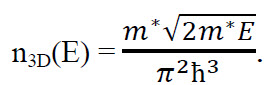
В низкоразмерной структуре свободное движение ограниченно по крайней мере в одном направлении. В данном направлении (пусть это будет направление вдоль оси х) потенциальная энергия электрона может быть представлена в виде бесконечно глубокой потенциальной ямы, как это показано на рисунке 1. Если ширина ямы вдоль оси х равна а, то в области 0<x<а электрон имеет нулевую потенциальную энергию. Бесконечно высокий потенциальный барьер делает невозможным нахождение электрона за границами этой области.
Таким образом, волновая функция электрона должна обращаться в нуль на границах потенциальной ямы, т.е. при х=0 и х=а. Такому условию отвечает лишь ограниченный набор волновых функций. Это стоячие волны с длиной λ, определяемой соотношением:
λn = 2а/n (n = 1, 2, 3…).
Рисунок 1 – Потенциальная яма и волновые функции электронов нейСоответствующие разрешенные значения волнового вектора дискретны и равны
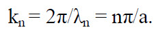
Как следствие, энергии разрешенных энергетических состояний электрона в яме тоже оказывается дискретными. Спектр этих состояний имеет вид
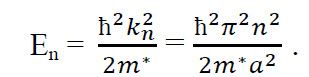
Целое число n является квантовым числом, обозначающим квантовое состояние. Таким образом, электрон, помещенный в ограниченную область пространства, может занимать только дискретные энергетические уровни. Самое низкое состояние имеет энергию
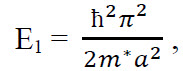
которая всегда больше нуля. Ненулевая минимальная энергия отличает квантово-механическую систему от классической, для которой энергия частицы, находящейся на дне потенциальной ямы, тождественно равна нулю. Кроме того, разрешенные состояния энергии для электрона оказываются квантованными и пропорциональны n2.
Для того чтобы удовлетворить принципу неопределенности ΔрΔх ≥ ħ/2 (в нашем случае Δх = а), неопределенность импульса электрона должна быть Δр≥ħ/2а, что отвечает минимальному изменению энергии ΔЕ=(Δр)2/2=ħ2/8а2, которое (с точностью до множителя π2/4) соответствует приведенному выше выражению для Е1. Таким образом, принцип неопределенности также приводит нас к выводу о ненулевом значении минимальной энергии электрона в потенциальной яме.
Ограничение движения электронов (дырок) в низкоразмерной структуре, приводящее (вследствие их квантово-волновой природы) к ненулевому минимальному значению их энергии и к дискретности энергий разрешенных состояний, называют квантовым ограничением (quantumconfinement). В твердых телах квантовое ограничение может быть реализовано в трех пространственных направлениях. Количество направлений, в которых эффект квантового ограничения отсутствует, используется в качестве критерия для классификации элементарных низкоразмерных структур по трем группам: квантовые пленки, квантовые шнуры, и квантовые точки. Схематически они представлены на рисунке 2.
В случае движения носителя заряда вдоль потенциальных барьеров доминируют балистический транспорт и квантовая интерференция. Особенности транспорта носителей заряда в твердых телах во многом определяется процессами их рассеяния в твердых телах во многом определяется прцессами их рассеяния при движении из одной области в другую. Электрон, сталкиваясь с другим электроном или рассеиваясь на колебаниях решетки, дефектах либо границе раздела, неизбежно изменяет свое состояние. Среднее расстояние, которое электрон проходит между двумя последовательными актами рассеяния, называют средней длиной свободного пробега (meanfreepath).
В макроскопических системах средняя длина свободного пробега электронов всегда намного меньше размера этих систем. Для них справедливы следующие допущения: 1) процессы рассеяния носителей заряда локальны, т.е. имеют место в определенных точках пространства; 2) рассеяние происходит непрерывно во времнени; 3) и рассеяние, и поля, инициирующие движение носителей заряда, настолько слабые, что вызванное ими отклонение электронной системы от равновесия можно рассматривать независимо друг от друга; 4) масштаб времени для наблюдения за системой выбран таким образом, что регистрируются только те события, которые происходят за времена, превышающие среднее время между двумя ближайшими актами рассеяния. Такие допущения позволяют использовать для описания транспорта носителей заряда в макроскопических системах кинетическое уравнение Больцмана.
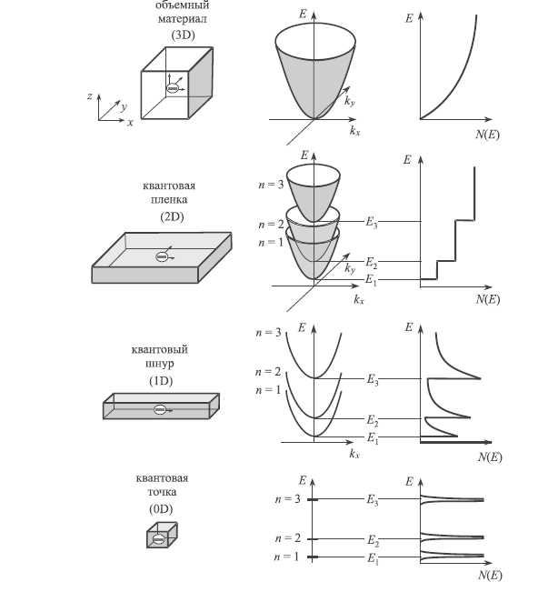
Рисунок 2 – Элементарные низкоразмерные структуры, их энергетические диаграммы и плотности состояний N(E) в сравнении с трехмерной структуройВ наноструктурах условия для транспорта носителей заряда существенно отличаются от таковых в макросистемах. В структурах с размером меньше длины свободного пробега перенос носителей заряда происходит без их рассеяния. Такой перенос называется баллистическим транспотром (ballistic transport). При этом допущения, перечисленные выше, теряют свою силу. Основные эффекты, относящиеся к баллистическому транспорту, определяются соотношением между размерами структуры, в которой имеет место перенос носителей заряда, и характерными длинами свободного пробега. Ключевыми являются длины свободного пробега, характеризующие упругое и неупругое рассеяние носителей.
Средняя длина свободного пробега при упругом рассеянии (elasticmeanfreepath) – это среднее расстояние, которое проходит носитель заряда между двумя актами упругого рассеяния. Когда электронная система вырождена при низкой температуре, она определяется скоростью Ферми vF= (2EF/m)1/2 (EF – энергия Ферми) и временем рассеяния τsc = Dd/ vF2 (D – коэффициент диффузии носителей заряда, d– мерность структуры) как le = vFτsc.
Средняя длина свободного пробега при неупругом рассеянии (inelssticmeanfreepath) – это расстояние, на котором электронная волна изменяет свою фазу вследствие рассеяния. Она равна lin = vFτφ, где τφ – время релаксации фазы (или энергии). Имеется и другой параметр, характеризующий неупругое рассеяние носителей заряда. Длина фазовой когерентности (phase coherence length) lφ = (Dτφ)1/2 – это расстояние, на котором электронная волна сохраняет свою фазу (или, как еще говорят, подвижный носитель сохраняет свою «фазовую память»). Следует иметь в виду, что средняя длина свободного пробега при неупругом рассеянии и длина фазовой когерентности представляет собой различные характеристики. Длина фазовой когерентности меньше, чем средняя длина свободного пробега при неупругом рассеянии. Оба эти параметра важны при анализе условий интерференции электронный волн.
В твердых телах средняя длина свободного пробега для неупругого рассеяния больше, чем для упругого. Транспорт носителей заряда в структурах с размером больше le, но меньше lin происходит «квазибаллистически», т.е. со слабым рассеянием.
Важной характеристикой наноструктур является длина волны Ферми λF = 2π/kF, где kF – волновой вектор Ферми. При Т=0 электроны находятся в состояниях, определяемых соотношением kF ≥ |k|, что эквивалентно электронным волнам с длиной волны λ≥λF.
Сравнивая размер наноструктуры со средней длиной свободного пробега электронов и с длинной волны Ферми (являющимися характеристиками материала, из которого данная структура изготовлена), можно предсказать основные особенности движения носителей заряда в этой наноструктуре.
Идеальный баллистический транспорт носителей заряда в наноструктурах характеризуется универсальной баллистической проводимостью (universalballisticconductance). которая не зависит от типа материала и определяется лишь фундаментальными константами. Наиболее простым прибором для иллюстрации баллистического транспорта является проводник с двумя контактами. Такой проводник схематически изображен на рисунке 3, где сужение между двумя резервуарами с электронами играет роль проводящего квантового шнура. Предполагается, что в этом канале нет никаких неоднородностей, приводящих к рассеянию носителей. Кроме того, предполагается, что связь проводящего канала с резервуарами электронов осуществляется посредством безотражательных проводников; это приводит к неизбежному попаданию в резервуар всех электронов, вышедших из канала.
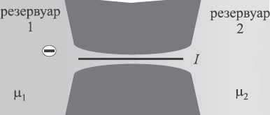
Рисунок 3 – Два резервуара с электронами, соединенные проводящим каналомБудем считать, что Т=0, а резервуары заполнены электронами вплоть до электрохимических потенциалов μ1 и μ2, где μ1> μ2. Если электронные состояния первого резервуара в интервале энергий от μ1 до μ2 полностью заняты, то между резервуарами протекает ток
I = (μ1 – μ2)ev(dn/dμ),
где е – заряд электрона; v– составляющая скорости электронов на поверхности Ферми вдоль оси канала; dn/dμ – плотность электронных состояний в канале (с учетом вырождения по спину). В квантовом dn/dμ =1/πhv. Учитывая, что μ1 – μ2 = е(V1 – V2), где V1 и V2 – электрические потенциалы, приводящие к различию электрохимических потенциалов в резервуарах, для проводимости квантового шнура получим:
G = I/(V1 – V2) = e2/πh = 2e2/h.
Это – проводимость идеального одномерного проводника в баллистическом режиме. Она определяется только фундаментальными константами – зарядом электрона и постоянной Планка. Величину e2/h =38,74 мкСм называют квантовой единицей проводимости (или квантом проводимости). Соответствующее сопротивление равно e2/h = 25812,807 Ом (квант сопротивления). Для канала с N разрешенными состояниями (или, что то же самое, с N передающими модами) получаем
G = N(2e2/h).
Таким образом, проводимость канала с несколькими передающими модами квантируется в единицах 2e2/h. Это наблюдается в квантовых точечных контактах (quantum point contacts), которые представляют собой узкие перемычки, соединяющие широкие резервуары с электронами. Пример такой структуры и ее проводимость, показаны на рисунке 4.
Короткое сужение в «захоронненом» двумерном электронном гае (2DEG) контролируется находящимися на поверхности затворами, имеющими форму направленных навстречу друг другу острых штырей. Чтобы вытеснить двумерный электронный газ из-под затворов и сформировать узкий проводящий канал, на затворы подается отрицательное смещение. Напряжение Vg определяет ширину канала. При увеличении отрицательного смещения ширина канала постепенно уменьшается, и канал исчезает. Если же ширина канала возрастет, то количество разрешенных (лежащих ниже уровня Ферми) состояний увеличивается. На кривой проводимости появляются ступеньки, соответствующие числу этих состояний N. Следует помнить, что в случае, когда проводящий канал не является идеальным, процессы рассеяния носителей заряда приводят к уменьшению тока, поскольку вероятность переноса носителей заряда становится меньше единицы. Это необходимо учитывать при расчете проводящего канала.
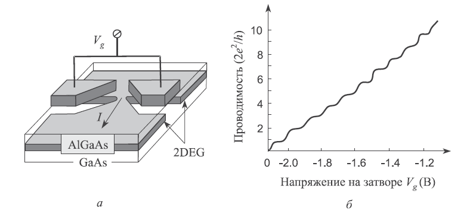
Рисунок 4 – Изменение проводимостей квантового точечного контакта, сформированного в скрытом слое двумерного электронного газа поверхностным электродом: а) схематическое изображение квантового контакта; б) изменение его проводимостиКак только движение электрона становится когерентным (в том смысле, что электрон проходит через всю структуру без рассеяния), его волновая функция сохраняет свою фазу. При этом возникают разнообразные интерференционные эффекты.
Фазовая когерентность происходит в структурах с размерами порядка длины фазовой когерентности электрона в данном материале. При таких соотношениях проводимость структуры определятся эффектами, связанными с фазовой интерференцией. Это имеет место в чисто баллистических или квазибаллистических режимах переноса носителей заряда. Последний допускает рассеивание носителей заряда, которое является типичным для большинства наноструктур, рассматриваемых как системы с незначительным разупорядочением. В этом случае критическая длина определяется средней длиной свободного пробега носителей заряда при неупругом рассеянии.
Рассмотрим интерференцию двух волн, представленных волновыми функциями в общем виде ψ=Аехр(iф). Когда две такие волны складываются, вероятность появления новой волны определяется соотношением
W = |ψ1 – ψ2|2 = |A1|2+|A2|2+4|A1A2|cos(ф1 - ф2).
Это вероятность может измяться пределах от суммы амплитуд двух взаимодействующих волн до из разности, в зависимости от соотношения их фах ф1 и ф2. Замечательной иллюстрацией квантовой интерференции фаз в низкоразмерных структурах является эффект Ааронова-Бома. Конструкция интерферометра, подходящего для экспериментального наблюдения представлена на рисунке 5. Электронные волны, поступающие из волновода к левому входному контакту, расщепляются на две группы равных по амплитуде волн, огибает две половинки кольца, встречаются и интерферируют в правой части кольца и покидают его через правый выводной контакт. Маленький соленоид, несущий магнитный поток Ф, размещается полностью внутри кольца так, что его магнитное поле перпендикулярно плоскости кольца и проходит через отверстие в нем. Желательно использовать волновод достаточно малых размеров, чтобы ограничить в нем возможное количество электронных мод одной или несколькими.
Рисунок 5 – Конструкция интерферометра для экспериментального наблюдения эффекта Ааронова-БомаПолный поток через структуру от левого входа к правому выходу зависит от соотношения между длиной ветвей кольца и средней длиной свободного пробега электронов при неупругом рассеянии в материале кольца. Если это отношение удовлетворяет требованиям квазибаллистического транспорта, то ток в выходном контакте определяется фазовой интерференцией электронных волн на его входе. Векторный потенциал А магнитного поля, проходящего через отверстие в кольце, азимутален. Следовательно, электроны, проходящие по каждой из ветвей кольца, двигаются или параллельно, или антипараллельно векторному потенциалу. В результате появляется разница в фазах электронных волн, прибывающих к выходному контакту из различных ветвей кольца. Эта разница определяется как Δф=2π(Ф/Ф0), где Ф0=h/e – квант магнитного потока. Для появления интерференции электронных волн необходима периодичность в количестве квантов магнитного потока, пронизывающих кольцо. Интерференция происходит конструктивно – с увеличением амплитуды результирующей электронной волны, когда Ф кратно Ф0, и деструктивно – с уменьшением амплитуды результирующей электронной волны, в промежутке между двумя ближайшими кратными значениями. Это приводит к периодической модуляции поперечной проводимости (сопротивления) кольца магнитным полем, которая известна как магнитный эффект Ааронова-Бома. Следует обратить внимание на то, что реальные устройства едва ли удовлетворяют требованиям для наблюдения «чистого» эффекта Ааронова-Бома. Дело в том, что магнитное поле проникает через ветви кольца интерферометра, а не только в область, ограниченную ими. Это ведет к дополнительным изменениям тока при высоких магнитных полях, в то время как при низких магнитных полях преобладает закрытый (ограниченный кольцом) поток.
Наиболее показательным экспериментальным подтверждением эффекта Ааронова-Бома является изменение сопротивления углеродных нанотрубок, помещенных в магнитное поле (рисунок 6).
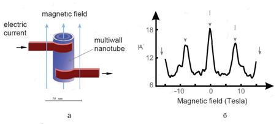
Рисунок 6 – Схема измерения сопротивления углеродных нанотрубок, помещенных в магнитное поле (а), и наблюдаемые изменения сопротивления(б)Изменение проводимости в результате вазовой интерференции может происходить и в традиционных низкоразмерных проводниках, которые являются обычно длинными и тонкими. Примеси или другие дефекты внутри такого проводника создают потенциальные барьеры, которые электронные волны должны преодолеть. Схематически это представлено на рисунке 7.
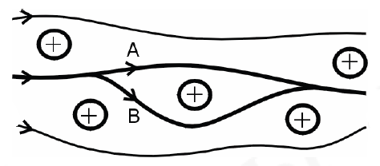
Рисунок 7 – Расщепление траектории движения электронов в твердом теле под действием атома примесиТранспорт носителей зарядов может также проходить и перпендикулярно потенциальным барьерам. Прохождение носителей заряда через потенциальные барьеры имеет место исключительно посредством их туннелирования, что и обеспечивает перенос носителей из одной области наноэлектронного прибора в другую. Такой эффект не возможен с точки зрения классической механики, однако имеет место для квантовых частиц, которым присущ корпускулярно-волновой дуализм. Волновые свойства квантовых частиц приводят и к другому, аномальному с точки зрения классической механики, эффекту – надбарьерному отражению.
Взаимодействие квантовых частиц с различными потенциальными барьерами иллюстрирует рисунок 8.
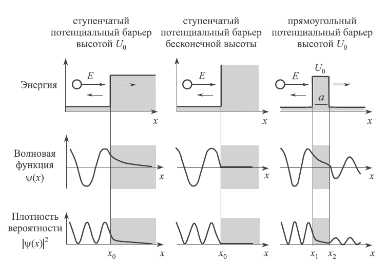
Рисунок 8 – Взаимодействие квантовой частицы с полной энергией Е со ступенчатым барьером конечной высоты U0, с бесконечно высоким потенциальным барьером и с прямоугольным барьером высотой U0 и шириной аСогласно классической механике, частица с энергией Е<U0, движущая слева направо, то есть приближающаяся к потенциальному барьеру, отразится от него и начнет двигаться в обратном направлении. Если же Е<U0, то частица продолжит движение в прежнем направлении. В квантовой механике картина иная.
На языке квантовой механики движение частицы в одномерном потенциальном поле U(x) описывается уравнение Шредингера:
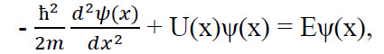
где m –масса частицы, ψ(x) – ее волновая функция.
Если энергия квантовой частицы больше высоты ступенчатого барьера (Е > U0), то в области перед потенциальным барьером, где U(x) = 0, решение уравнения Шредингера для частицы с импульсом 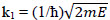 имеет вид суперпозиции двух волн:
ψ = A’exp(ik1x) + Bexp(-ik1x),
где А’, B – константы, i– мнимая единица. Волновую функцию обычно нормируют таким образом, что А’ = 1, A’exp(ik1x) – соответствует падающей волне, Bexp(-ik1x) – соответствует отраженной волне.
При х → ∞ волновая функция прошедшей над потенциальным барьером частицы имеет асимптотический вид:
ψ = Aexp(ik2x),
где 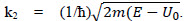. Плотность потока в падающей волне пропорционально k1, в отраженной – k1|B|2, а в прошедшей k2|А|2. Коэффициент прохождения частицы через границу потенциального барьера, определяемый как отношение плотности потока в прошедшей волне к плотности потока в падающей волне, равен:
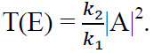
Коэффициент отражения частицы от потенциального барьера, определяется отношением плотности отраженного потока к плотности падающего потока, равен:
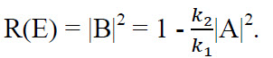
Очевидно, что R(E) = 1-Т(Е).
Постоянные А и В, определенные из условия непрерывности волновой функции и ее первой производной при х=х0 , равны:
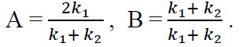
В соответствии с приведенными выражениями коэффициенты отражения и прохождения равны:
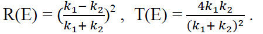
Отсюда следует, что при E = U0 (k2 = 0) коэффициент отражения Rобращается в единицу, а коэффициент прохождения – в нуль. С ростом энергии частицы коэффициент отражения уменьшается и стремиться к нулю при Е → ∞, так как R≈ (U0/4E)2 при E>>U0.
Важное место занимают спиновые эффекты. Спин, будучи одной из фундаментальной характеристик электрона приводит к появлению новых особенностей транспорта носителей заряда в наноструктурах. Спиновые эффекты возникают, когда в материале появляется спиновый дисбаланс заселенности уровня Ферми. Такой дисбаланс обычно присутствует в ферромагнитных материалах, у которых плотности вакантных состояний для электронов с различными спинами практически идентичны, однако эти состояния существенно различаются по энергии, как схематически показано на рисунке 8.
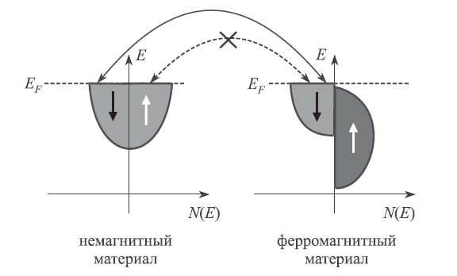
Рисунок 8 – Плотности состояний электронов с различными спинами в немагнитных и ферромагнитных материалах и обмен электронами между нимиВ спин-поляризованных материалах состояния с преобладающим спином контролируется намагниченностью этих материалов. При инжекции спин-поляризованных электронов в материал с отличной от нуля намагниченностью, а следовательно, и со спиновой поляризацией, контролируемой внешним магнитным полем, этот материал может вести себя как проводник или как изолятор – в зависимости от направления намагниченности и ориентации спинов инжектированных электронов. При одинаковом направлении спинов инжектированных электронов и электронов материала обеспечивается наивысшая проводимость. Противоположное направление спинов препятствует прохождению электронов через материал.
Два основных эффекта – гигантское магнитосопротивление и туннельное магнитосопротивление – являются следствие особенностей транспорта носителей заряда, контролируемого спином электронов в наноразмерных структурах.
Саморегулирование является одной из наиболее общих закономерностей в природе. Оно осуществляется различными путями, но всегда с одной целью – обеспечить наибольшую устойчивость системы.
Самоупорядочение – это процесс адсорбции и специфического расположения молекул на твердой поверхности. Его движущей силой является хемосорбция, которая в особенности проявляется в высокоэнергетических реакциях между адсорбантом и адсорбирующей поверхностью. В отличие от сильного взаимодействия между адсорбируемой молекулой и поверхностью, взаимодействие между самими молекулами остается слабым.
Самосборка – это определенное расположение взаимодействующих атомов в твердот меле. Движущей силой самоорганизующихся процессов является стремление атомной системы принять конфигурацию, соответствующую минимуму ее потенциальной энергии. Из таких процессов в твердых телах наиболее значимым и часто используемым является процесс спонтанной кристаллизации.
Тема 7. Основные технологические операции получения микро- и наноструктур
Технологический процесс полупроводникового производства — технологический процесс изготовления полупроводниковых (п/п) изделий и материалов, и состоит из последовательности технологических (обработка, сборка) и контрольных операций, часть производственного процесса производства п/п изделий (транзисторов, диодов и т. п.).
При производстве п/п интегральных микросхем применяется фотолитография и литографическое оборудование. Разрешающая способность (в мкм и нм) этого оборудования (т. н. проектные нормы) и определяет название применяемого конкретного технологического процесса.
Совершенствование технологии и пропорциональное уменьшение размеров п/п структур способствуют улучшению характеристик (размеры, энергопотребление, рабочие частоты, стоимость) полупроводниковых приборов (микросхем, процессоров, микроконтроллеров и т.д.). Особую значимость это имеет для процессорных ядер, в аспектах потребления электроэнергии и повышения производительности, поэтому ниже указаны процессоры (ядра) массового производства на данном техпроцессе.
Технологический процесс производства полупроводниковых приборов и интегральных микросхем (микропроцессоров, модулей памяти и др.) включает нижеследующие операции.
1. в полупроводниковую пластину на вакуумной установке внедряют ионы
2. производится отжиг при высокой температуре
В результате восстанавливается нарушенная структура полупроводника и ионы примеси занимают узлы кристаллической решётки.
Технологии производства полупроводниковой продукции с субмикронными размерами элементов основана на чрезвычайно широком круге сложных физико-химических процессов: получение тонких плёнок термическим и ионно-плазменным распылением в вакууме, механическая обработка пластин производится по 14-му классу чистоты с отклонением от плоскостности не более 1 мкм, широко применяется ультразвук и лазерное излучение, используются отжиг в кислороде и водороде, рабочие температуры при плавлении металлов достигают более 1500 °C, при этом диффузионные печи поддерживают температуру с точностью 0,5 °C, широко применяются опасные химические элементы и соединения (например, белый фосфор).
Всё это обусловливает особые требования к производственной гигиене, так называемую «электронную гигиену», ведь в рабочей зоне обработки полупроводниковых пластин или на операциях сборки кристалла не должно быть более пяти пылинок размером 0,5 мкм в 1 л воздуха. Поэтому в чистых комнатах на фабриках по производству подобных изделий все работники обязаны носить специальные комбинезоны.
ВЫРАЩИВАНИЕ МОНОКРИСТАЛЛОВ - осуществляют из газовой, жидкой и твёрдой среды. Выбор метода выращивания определяется областью устойчивости вещества, наличием, типом и темп-рой фазовых переходов, хим. свойствами, давлением насыщенного пара и др. Большие, совершенные кристаллы получают, применяя "затравки" и создавая оптимальное пересыщение (переохлаждение) s на поверхности кристаллизации. Наиб. крупные (до 1 м) кристаллы получают из расплава или раствора.
Выращивание монокристаллов из расплава. На вращающейся затравке переохлаждение s создаётся регулируемым теплоотводом от поверхности кристалла и мениска прилегающего к нему расплава (метод Чохральского, рис. 1,a). Вытягиванием через щель на поверхности расплава получают профилированные кристаллы, напр. трубы, пластины (метод Степанова, рис. 1,б). При M. в. внутри расплава s создаётся охлаждением, напр. проточной водой держателя затравки (метод Киропулоса, рис. 1, в). При направленной кристаллизации контейнер с расплавом перемещают в горизонтальном или вертикальном направлении из горячей в холодную зону печи, при этом кристаллизацию начинают в специальным образом суженной передней части контейнера, что обеспечивает получение монокристаллич. слитка (метод "лодочки", рис. 1, д; метод Стокбергера - Бриджмена, рис. 1,г). В т. н. методе гарниссажа контейнер может быть сам из кристаллизующегося материала, охлаждаемого снаружи водой, тогда как его внутр. часть плавится токами высокой частоты; M. в. проводится "вытягиванием на затравку" или медленным охлаждением. В методе зонной плавки расплавленная зона передвигается от затравки через по-ликристаллич. слиток. Зонная плавка может проводиться в контейнере или без него (рис. 1,з). В последнем случае мениск расплава удерживается капиллярными силами, а иногда и эл--магн. "поддержкой". Для тугоплавких веществ используют плавление порошка, сыплющегося в горячую плазму, с оседанием получающихся капель расплава на затравку (метод Вернейля, рис. 1, e). Монокристаллы в виде волокон толщиной 10-200 мкм получают вытягиванием через фильеру либо из капли расплава, образующейся на стержне (в 1, 5-2 раза большей толщины) при нагревании его лазерным лучом (метод "пьедестала", рис. 1, ж).
Скорости выращивания из расплава 0,1-1 см/ч. Однородные кристаллы получают из расплава устойчивого хим. соединения. В присутствии примесей для получения однородных кристаллов целесообразно использовать метод вытягивания, обеспечив при выращивании постоянство формы границы раздела фаз.
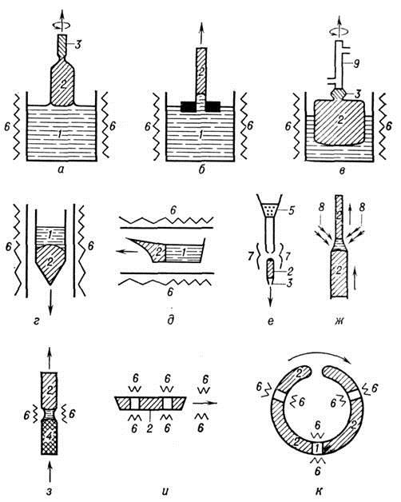
Рис. 4. Схема устройства растрового электронного микроскопа: 1 - электронная пушка; 2 - конденсор; 3 - отклоняющая система; 4 - конечная линза с корректором астигматизма; 5 - объектный столик; 6 - образец; 7 - вакуумная система; 8 - генератор разверток; 9 - блок управления увеличением; 10 -селектор сигналов (для выбора регистрируемого вторичного излучения); 11 -видеоусилитель; 12,13 - ЭЛТ и ее отклоняющая система; BИ1-BИ3 - потоки вторичных излучений; C1 - C3 - электрич. сигналы; Д1-Д3 - детекторы; ЭЛ1, ЭЛ2 - электронные лучи; X, Y - направления сканирования (строчная и кадровая развертки).
Выращивание монокристаллов из раствора. Переохлаждение создаётся снижением T, испарением растворителя (рис. 2,а) или "подпиткой" более концентрированным раствором (рис. 2, б). В т. н. методе температурного градиента в аппаратуре создаётся более горячая зона, где вещество растворяется и диффузией или конвекцией переносится к растущему кристаллу (рис. 2, в, г). Гидротермальное выращивание малорастворимых веществ проводят в автоклавах при высоких темп-pax и давлениях. Скорость выращивания 0,1 - 1 мм/сут. Для получения совершенных кристаллов из раствора необходимо, чтобы подвод вещества к растущей поверхности не лимитировал скорости роста. Это достигается, напр., перемешиванием раствора. В таких условиях возможна скорость 1 мм/ч и более (скоростное выращивание). Важны очистка сырья, стабилизация T и s, создание гидродинамич. течений, обеспечивающих равномерное питание граней.
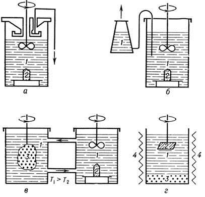
Рис. 2. Выращивание монокристалла из раствора: a - метод испарения растворителя; б - метод "подпитки"; в, г - метод температурного градиента. 1 - раствор; 2 - монокристалл; 3 - порошок; 4 - нагреватель.
Выращивание монокристалла из газовой среды осуществляется возгонкой вещества и его конденсацией на охлаждённую затравку. Используются также хим. реакции (при транспорте вещества к зоне роста, его разложении или синтезе на затравке). Выращивание осуществляется либо в герметическом контейнере, вдоль которого создаётся градиент T, либо в потоке газа. Для получения нитевидных кристаллов на поверхность затравки наносят капли растворителя, из которого кристаллизация идёт быстрее, чем из пара.
При выращивании монокристалла из поликристаллического образца последний выдерживают при высокой T для перекристаллизации мелких кристаллич. зёрен в крупные (рекристаллизация). Если вещество имеет полиморфные модификации то монокристаллы низкотемпературной фазы можно получить, охлаждая кристаллы в определ. температурном поле.
В виде монокристаллов выращивают множество веществ. В наиб. кол-вах производятся Si, Ge (метод Чохральского), кварц (гидротермальный метод), щё-лочно-галлоидные соединения (метод Киропулоса), корунд с разл. примесями (методы Вернейля, Чохральского и направленной кристаллизации), Y3Al5O12 с примесью Nd (методы Чохральского и направленной кристаллизации), LiNbO3, LiTaO3 (метод Чохральского), K(H5D)2PO4 (снижение T и "подпитка"), LiIO3 (испарение растворителя). Техн. алмаз в виде мелких моно-кристаллич. зёрен (до 0,2 мм) получают из графита прессованием в небольшом объёме при давлении ок. 4,4 атм и T= 1100 0C.
Резка кристалла на пластины.После получения монокристалла кремния и перед резкой его на пластины необходимо выполнить ряд операций. Первая из них - это калибровка монокристалла. Эта операция служит для придания кристаллу строго цилиндрической формы заданного диаметра. Следующая операция - это кристаллографическая ориентация монокристаллических слитков. В процессе роста монокристаллов наблюдается несоответствие оси слитка кристаллографической оси. Для получения пластин ориентированных в заданной плоскости, до резки производят ориентацию слитков. Ориентация полупроводников предусматривает определение кристаллографической плоскости, в которой материал имеет заданные электрические свойства. Для ориентации полупроводников пользуются рентгеновскими методами. Рентгеновский метод основан на отражении рентгеновских лучей от поверхности полупроводникового материала. Интенсивность отражения зависит от плотности упаковки атомами данной плоскости. Таким образом, определяют ориентацию слитка относительно кристаллографических осей. Затем на монокристалле делают базовый и дополнительный срезы для определения кристаллографических осей.После ориентации кристалла следует операция его резки на пластины. После резки пластины подвергаются шлифовке, полировке и химическому травлению. Последние три перечисленные операции необходимы для уменьшения неровности поверхности пластины и удаления приповерхностного нарушенного резкой слоя.
Эпитаксия — это закономерное нарастание одного кристаллического материала на другом, т. е. ориентированный рост одного кристалла на поверхности другого (подложки). Строго говоря, рост всех кристаллов можно назвать эпитаксиальным: каждый последующий слой имеет ту же ориентировку, что и предыдущий. Различают гетероэпитаксию, когда вещества подложки и нарастающего кристалла различны (процесс возможен только для химически не взаимодействующих веществ, например так изготавливают интегральные преобразователи со структурой кремний на сапфире), и гомоэпитаксию, когда они одинаковы. Ориентированный рост кристалла внутри объёма другого называется эндотаксией.
Эпитаксия особенно легко осуществляется, если различие постоянных решёток не превышает 10 %. При больших расхождениях сопрягаются наиболее плотноупакованные плоскости и направления. При этом часть плоскостей одной из решёток не имеет продолжения в другой; края таких оборванных плоскостей образуют дислокации несоответствия.
Эпитаксия происходит таким образом, чтобы суммарная энергия границы, состоящей из участков подложка-кристалл, кристалл-среда и подложка-среда, была минимальной.
Эпитаксия является одним из базовых процессов технологии полупроводниковых приборов и интегральных схем.
Диффузия — процесс взаимного проникновения молекул или атомов одного вещества между молекулами или атомами другого, приводящий к самопроизвольному выравниванию их концентраций по всему занимаемому объёму. В некоторых ситуациях одно из веществ уже имеет выравненную концентрацию и говорят о диффузии одного вещества в другом. При этом перенос вещества происходит из области с высокой концентрацией в область с низкой концентрацией (вдоль вектора градиента концентрации).
Примером диффузии может служить перемешивание газов (например, распространение запахов) или жидкостей (если в воду капнуть чернил, то жидкость через некоторое время станет равномерно окрашенной). Другой пример связан с твёрдым телом: атомы соприкасающихся металлов перемешиваются на границе соприкосновения. Важную роль диффузия частиц играет в физике плазмы.
Обычно под диффузией понимают процессы, сопровождающиеся переносом материи, однако иногда диффузионными называют также другие процессы переноса: теплопроводность, вязкое трение и т.д.
Анодное Оксидирование (синонимы: анодное оксидирование, анодное окисление) — процесс создания оксидной плёнки на поверхности некоторых металлов и сплавов путём их анодной поляризации в проводящей среде. Существуют различные виды анодирования, в том числе электрохимическое анодирование — процесс получения оксидного покрытия на поверхности различных металлов (Al, Mg, Ti, Ta, Zr, Hf и др.) и сплавов (алюминиевых, магниевых, титановых) в среде электролита, водного или неводного. Например, при анодировании алюминиевых сплавов деталь погружают в кислый электролит (водный раствор H2SO4) и соединяют с положительным полюсом источника тока; однако, сильно упрощённые представления о том, что выделяющийся при этом кислород взаимодействует с алюминием, образуя на его поверхности оксидную плёнку, мало соответствуют реальному механизму электрохимического анодирования.
Созданные в результате анодирования анодные оксидные плёнки (АОП) могут иметь различное назначение, например, представлять собой защитные, декоративные покрытия. АОП служат также диэлектриком в оксидных (электролитических) конденсаторах.
Ионная имплантация - это процесс, в котором практически любой элемент может быть внедрен в приповерхностную область любого твердого тела - мишени, помещенной в вакуумную камеру, посредством пучка высокоскоростных ионов с энергией до нескольких мегаэлектронвольт. Имплантируемые ионы внедряются в материал мишени на глубину от 0,01 до 1 мкм, формируя в ней особое структурно-фазовое состояние. Толщина слоя зависит от энергии и от массы ионов и от массы атомов мишени.
Так как технология имплантационного модифицирования позволяет внедрить в поверхность заданное количество практически любого химического элемента на заданную глубину, то таким образом можно сплавлять металлы, которые в расплавленном состоянии не смешиваются, или легировать одно вещество другим в пропорциях, которые невозможно достичь даже при использовании высоких температур. Следовательно, оказалось возможным создавать композиционные системы с уникальными структурами и свойствами, существенно отличными от свойств основной массы детали.
Как объект атомно-физических исследований ионная имплантация впервые сформировалась в начале 60-х годов. Это стало возможным благодаря достижениям в области изучения ядерных взаимодействий; основным оборудованием для ионного легирования является ускоритель. Энергия ионов может изменяться (в зависимости от свойств материалов комбинации ион - мишень) от нескольких килоэлектронвольт (кэВ) до нескольких мегаэлектронвольт (МэВ). Введение импланта в основную решетку поверхности изделия возможно без “соблюдения” законов термодинамики, определяющих равновесные процессы, например, диффузию и растворимость.
Ионная имплантация приводит к значительному изменению свойств поверхности по глубине:
Сталкиваясь с электронами и ядрами мишени, ионы легирующего вещества на некоторой глубине теряют энергию и останавливаются. Если известны тип и энергия ионов и свойства обрабатываемого материала, то глубина проникновения (или длина пробега) может быть вычислена. Для пучков с типичными энергиями от 10 до 500 кэВ величина пробега достигает одного мкм. Как уже указывалось, вследствие влияния большого числа факторов, эпюра распределения внедренного вещества в поверхность близка по форме гауссовскому распределению. Внедрение ионов в кристаллическую решетку обрабатываемого материала приводит к появлению дефектов структуры. Выбитые из узлов решетки атомы вещества приводят к образованию вакансий и дефектов структуры в виде внедренных межузельных атомов. Эти же дефекты возникают при застревании между узлами решетки ионов. Скопление таких дефектов образует дислокации и целые дислокационные скопления.
Cостояние исследований и разработок нанотехнологий и наноматериалов в Республике Беларусь
В настоящее время в социально-экономических приоритетах Республики Беларусь особая роль принадлежит развитию наукоемких отраслей производства с высоким уровнем добавленной стоимости. На современном этапе развития мировой экономики таким направлением, безусловно, являются нанотехнологии. Нанотехнологии требуют малого количества затрат энергии, материалов, производственных и складских помещений. С другой стороны, развитие нанотехнологий требует высокого уровня подготовки ученых, инженеров и технических работников, а также организации производства. Последние обстоятельства присущи состоя¬нию развития экономики и науки в Беларуси и являются предпосылками для разработки и развития нанотехнологий в республике.
Современные приложения нанотехнологий включают:
В Беларуси с начала нового века активно ведутся работы в области нанотехнологий в рамках отраслевых научно-технических программ, программ фундаментальных исследований НАН Беларуси и грантов БРФФИ. Отметим некоторые работы, начавшиеся в 2000–2001 гг. при поддержке НАН Беларуси, отраслевых министерств и БРФФИ и обещающие интересные научные и технические решения и результаты:
С 2003 по 2005 гг. выполнялась Государственная программа ориентированных фундаментальных исследований (ГПОФИ) «Наноматериалы и нанотехнологии». Государственным заказчиком программы выступает НАН Беларуси, головным исполнителем — Государственное научное учреждение «Институт тепло— и массообмена им. А.В. Лыкова НАН Беларуси». Научным руководителем ГПОФИ является академик НАНБ П.А. Витязь. Финансирование заданий программы осуществлялось из средств государственного бюджета Республики Беларусь, в рамках соответствующих ведомств, собственных средств участников программы и потребителей разрабатываемой продукции. Срок выполнения проектов — 2–3 года. К участию в программе были допущены проекты, выполняемые учеными и специалистами Беларуси и имеющие большое научное и практическое значение.
При реализации программы предполагалось создание и широкое внедрение в промышленность наукоемких технологий, новых материалов, объединение в рамках программы наиболее квалифицированных ученых, инженерных и технических кадров НАН Беларуси, Министерства образования, Министерства промышленности и других ведомств и организаций.
Основной целью программы являлось накопление знаний и использование научно-технического потенциала Республики Беларусь для создания новых углеродных, сверхтвердых, тугоплавких, магнитных, керамических, композиционных наноматериалов и изделий на их основе, а также наноструктур и микросистем, которые по своим функциональным характеристикам отвечают мировому уровню или превышают его, применение их в ряде отраслей народного хозяйства для повышения конкурентоспособности, расширения экспорта и решения вопроса по импортозамещению.
Структура программы включала 5 разделов:
В 2004 г. в Минске была проведена конференция по наноматериалам и нанотехнологиям, на которой были представлены результаты последних исследований в Республике Беларусь. Обзор представленных докладов показал, что исследования по нанотехнологиям в Беларуси соответствуют мировому уровню.
С 2006 г. начала выполняться Комплексная программа прикладных научных исследований «Наноматериалы и нанотехнологии», которая должна существенно продвинуть вперед исследования по нанотехнологиям к проведению НИОКР и созданию оборудования для нанотехнологий. Таким образом, в Беларуси будут созданы предпосылки для разработки основ создания новых наноматериалов и нанотехнологий с целью участия в международном разделении труда в этой перспективной отрасли.
Манипуляции с самыми маленькими физическими субстанциями — атомами и молекулами, — по прогнозам специалистов, уже в ближайшем будущем откроют перед цивилизацией беспрецедентные перспективы и станут ключом к будущему жизнеобеспечению человечества во всех сферах его деятельности. Новые технологии могут в корне изменить медицину, энергетику, биотехнологии, электронику и другие отрасли.
Достижения белорусских ученых, представляющие интерес для
практического освоения в Республике Беларусь
Белорусские ученые выполняют научные исследования по многим направлениям развития нанотехнологий и создания наноматериалов, как самостоятельно, так и в рамках международного сотрудничества. Наиболее
полный перечень этих работ содержится в Государственных программах научных исследований “Нанотех”, “Конвергенция”, “Электроника”.
Тенденции развития современной микро-, нано- и функциональной
электроники отражены в перечне приоритетных направлений фундаментальных и прикладных научных исследований Республики Беларусь на 2011 – 2015 годы, утвержденном Постановлением Совета Министров Республики Беларусь от 19.04.2010 № 585. В который, в частности, включены следующие направления:
1. новые оптические, волоконно-оптические и нелинейно-оптические компоненты, материалы и покрытия, новые материалы для приборов функциональной микро-, опто-, нано- и СВЧ-электроники;
2. научные основы создания и функционирования оптико-электронных микросистем, устройств молекулярной электроники и кремниевой фотоники, электронных и оптических систем обработки информации на спиновых эффектах; нанотехнологии, наноструктуры и наноматериалы в электронике, оптике, оптоэлектронике;
3. физические процессы в эпитаксиальных многослойных структурах, тонких
полупроводниковых и диэлектрических пленках, на границах раздела между
слоями и технологии создания таких структур;
4. принципы схемотехнического построения и технологии создания интегральных, в том числе трехмерных, микросхем, устройств функциональной и СВЧ-электроники, опто- и микроэлектромеханических систем, светодиодных и фоточувствительных приборов, высокоэффективных солнечных элементов.
Традиционной тенденцией в развитии электроники и ее основной современной составляющей – микроэлектроники, является постоянное уменьшение размеров элементов интегральных микросхем, что позволяет увеличивать их информационную мощность и повышать быстродействие. В США и Японии уже выпускаются интегральные микросхемы с размерами элементов с размерами порядка 10 нм, что потребовало инвестиций в размере нескольких миллиардов долларов. Создание таких производств в Беларуси представляетсэкономически невозможным, хотя научные наработки в данном направлении имеются в БГУИР и БГУ. Реальным же является использование различных наноматериалов и нанотехнологий для существенного увеличения функциональных возможностей кремниевых ИМС при необязательной их миниатюризации до предельных размеров. Кроме этого, значительные перспективы представляют различные датчики, рабочие характеристики которых существенно улучшаются при использовании в них наноструктурированных материалов. Учеными Беларуси создан существенный задел и предложены оригинальные инженерные решения в данных направлениях. Наиболее интересные с прикладной точки зрения результаты получены в 2006-2010 гг. при выполнении заданий подпрограммы «Наноэлектроника и Микросистемы».
Развитие этих работ осуществляется в рамках проектов программы Союзного государства «Нанотехнология- СГ»:
- «Разработать и изготовить вакуумный триод и матрицу на его основе с катодом на базе структурированных углеродных наноторубок» (организация
исполнитель – БГУИР, научный руководитель Лабунов В.А.).
- «Разработать технологическую инструкцию и опытные образцы магнитоуправляемых сенсоров на основе наноразмерных гранулированных и мультислойных структур» (организация исполнитель ГНПО «НПЦ по материаловедению НАН Беларуси; научный руководитель Демьянов С.Е..).
- «Разработать технологию формирования нанострктурных материалов для
высокочувствительных химических сенсоров и гироскопических сенсоров53
угловых скоростей» (головная организация - исполнитель БНТУ; научный
руководитель Плескачевский Ю.М.).
- «Разработать технологии изготовления сенсоров размеров, формы, температуры, химического и биологического состава микро и нано частиц на
основе нанопористых и наноструктурированных пленок с использованиемметодов оптического микрорезонанса» (организация -исполнитель –БГУ, БГУИР научный руководитель В.А. Саечников)
- «Разработать логистические наноструктурные СВЧ устройства на основе
массивов углеродных нанотрубок» (головная организация -исполнитель
НИИЯП БГУ; научный руководитель Карпович В.А.).
- «Разработать и создать источник одиночных фотонов на основе
наноразмерного алмаза для спутниковой системы квантовой криптографии»
(организация-исполнитель Институт физики НАН Беларуси; научный
руководитель – Килин С.Я.).
- «Разработать волоконнооптические лазерный и фотодиодный модули на
основе наноэлектронных гетероструктур для приемопередающих систем
сверхмалых космических аппаратов в частотном диапазоне до 30-50 ГГц»
(организация-исполнитель Институт физики НАН Беларуси; научный
руководитель Малышев С.А.).
- «Разработать электронно-управляемый миниатюрный матричный реактивный двигатель на базе кремниевой МЭМС технологии» (головная организация-исполнитель – БГУИР, научный руководитель Бондаренко В.П.)
- «Разработать многокристальный микроэлектронный модуль для силовых
устройств космической техники на базе микроэлектронной технологии» (головная организация исполнитель – БГУИР. Научный руководитель – Сокол
В.А.)
- «Разработать технологичческую инструкцию и опытные образцы нанострктурных сенсоров магнитного поля на основе метода треков быстрых
тяжелых ионов для применения, в том числе, в изделиях ракетнокосмической техники» (организация-исполнитель - НПЦ по материаловедению НАН Беларуси; научный руководитель Демьянов С.Е.).
В рамках заданий Государственной программы научных исследований “Нанотех” выполнены следующие перспективные разработки:
- технология получения новых магнитных и магнитоэлектрических нанокомпозиционных материалов для устройств микроэлектроники и спинтроники (Центр по материаловедению НАН Беларуси)
- технология получения кремниевых нанотрубок и наноструктурированных металлических покрытий в компрессионной плазме с целью создания устройств обработки и отображения информации (Институт физики НАН Беларуси, БГУ, БГУИР)
- оригинальные конструкции и технология изготовления пленочных термисторов на основе полупроводниковых нанокомпозиций оксидов вентильных металлов и наночастиц металлов для интегральных и микроминиатюрных резисторов и конденсаторов с улучшенными характеристиками (БГУИР)
- высокоэффективные фото- и бета-электрические миниатюрные источники энергии на основе наноструктурированного пористого кремния (БГУИР)
- композиционные наноматериалы и структуры для микроволновой электроники на основе растворосодержащих пористых порошкообразных и органических матриц (БГУИР).
Приведенные данные свидетельствуют о значительном научном и практическом заделе белорусских ученых в области использования нанотехнологий и наноматериалов в электронике.
Исследования и разработки нанотехнологий и наноматериалов в белорусском государственном университетеинформатики и радиоэлектроники
Кафедра микро- и наноэлектроники Белорусского государственного университета информатики и радиоэлектроники организована в 1965 году.
Миссия кафедры микро- и наноэлектроники - осуществлять образовательную и научно-исследовательскую деятельность, направленную на подготовку специалистов с высшим образованием и научных кадров в области микроэлектроники, наноэлектроники, нанотехнологий и наноматериалов в интересах инновационного развития Беларуси.
Преподавание на кафедре осуществляется по 43 современным дисциплинам и обеспечивается 24 преподавателями. В их числе 8 профессоров и 15 доцентов.
Учебные и научно-исследовательские лаборатории кафедры располагают современным измерительным и технологическим оборудованием, высокопроизводительными персональными компьютерами с установленным лицензионным программным обеспечением для проектирования технологии/прибора/схемы/системы, а также исследования фундаментальных физических свойств микро- и наноструктурированных материалов и приборов на их основе.
Существуют следующие публикации и монографии изданные на кафедре:
1. А. Г. Смирнов, Квантовая электроника и оптоэлектроника (Вышэйшая школа, Минск, 1987)
2. В. П. Пархутик, В. А. Лабунов, Плазменное анодирование: физика, техника, примене-ние в микроэлектронике (Навука i тэхнiка, Минск, 1990)
3. И. И. Абрамов, В. В. Харитонов, Численное моделирование элементов интегральных схем (Вышэйшая школа, Минск, 1990)
4. В. Е. Борисенко, Твердофазные процессы в полупроводниках при импульсном нагреве (Навука i тэхнiка, Минск, 1992)
5. V. E. Borisenko, P. J. Hesketh, Solid State Rapid Thermal Processing of Semiconductors (Plenum, New York, 1997)
6. Ю. А. Родионов, Литография в производстве интегральных микросхем (Дизайн ПРО, Минск, 1998)
7. И. И. Абрамов, Моделирование физических процессов в элементах кремниевых инте-гральных микросхем (БГУ, Минск, 1999)
8. И. И. Абрамов, Моделирование элементов интегральных схем. Курслекций (БГУ, Минск, 1999)
9. V. E. Borisenko, Semiconducting Silicides (Springer, Berlin, 2000)
10. И. И. Абрамов, Е. Г. Новик, Численное моделирование металлических одноэлектрон-ных транзисторов (Бестпринт, Минск, 2000)
11. А. Л. Данилюк, А. А. Нарейко, Влияние слабых магнитных полей на метастабильные структуры (БГУИР, Минск, 2001)
12. А. П. Казанцев, Электротехнические материалы (Дизайн ПРО, Минск, 2001)
13. Б. С. Колосницын, Элементы интегральных микросхем. Физические основы (БГУИР, Минск, 2001)
14. В. П. Василевич, А. М. Кисель, А. Б. Медведева, В. И. Плебанович, Ю. А. Родионов, Химическая обработка в технологии ИМС (ПГУ, Полоцк, 2001)
15. Б. С. Колосницын, П. П. Стешенко, В. В. Шульгов, Полупроводниковые приборы и интегральные микросхемы (Амалфея, Минск, 2002)
16. А. Г. Смирнов, Матрицы активных элементов для управления высокоинформативными жидкокристаллическими дисплеями (Бестпринт, Минск, 2002)
17. Н. В. Гапоненко, Пленки, сформированные золь-гель методом на полупроводниковых и в мезопористых матрицах (Беларуская навука, Минск, 2003)
18. V. E. Borisenko, S. Ossicini, What is What in the Nanoworld (Wiley-VCH, Weinheim, 2004)
19. В. А. Сокол, Электрохимическая технология гибридных интегральных схем (Бес-тпринт, Минск, 2004)
20. А. М. Гиро, Композиционные пленки для систем магнитной записи (Бестпринт, Минск, 2005)
21. И. И. Абрамов, Лекции по моделированию элементов кремниевых интегральных схем (НИЦ "Регулярная и хаотическая динамика", Москва-Ижевск, 2005)
22. V. E. Borisenko, S. Ossicini, What is What in the Nanoworld. Second, Completely Revised and Enlarged Edition (Wiley-VCH, Weinheim, 2008), 522 p.
23. В. М. Анищик, В. Е. Борисенко, С. А. Жданок, Н. К. Толочко, В. М. Федосюк, Нанома-териалы и нанотехнологии (Издательский центр БГУ, Минск, 2008), 375 стр.
24. В. Е. Борисенко, А. И. Воробьева, Е. А. Уткина, Наноэлектроника (Бином, Москва, 2009), 223 с.
Конференции БГУИР в 2012 г:
- ОSTIS-2012 Международная конференция «Открытые семантические технологии проектирования интеллектуальных систем» (Open Semantic Technologies for Intelligent Systems).
- 48-я научно-техническая конференция аспирантов, магистрантов и студентов БГУИР.
- Международная конференция «Нейронные сети и искусственный интеллект».
- Х Белорусско-российская научно-техническая конференция «Технические средства защиты информации».
- Школа-семинар для молодых ученых «Проблемы обеспечения информационной безопасности» .
-Belarus Startup - открытый конкурс молодежных проектов в сфере высоких технологий.
- Международная научная конференция «Информационные технологии и системы - 2012».
- VI Международная научно-методическая конференция «Высшее техническое образование: проблемы и пути развития».
- Научно-методическая конференция «Непрерывное профессиональное образование лиц с ограниченными возможностями».
- VIII Международная научно-техническая конференция «Средства медицинской электроники и новые медицинские технологии - МЕДЭЛЕКТРОНИКА-2012».
- Международный научно-технический семинар «Телекоммуникации: сети и технологии, алгебраическое кодирование и безопасность данных».